Iltens rejse
Visuel gennemgang
Visuelt godkendt den 22. november 2026. Dokumentation fra iltens-rejse-3d til udgivelsen af Iltens rejse.
Faktiske skærmoptagelser i Chromium/SwiftShader, 1280×800. Ingen ændring af simulationshastighed. Mobil emuleret 390×844. Videoerne er faktiske skærmoptagelser og viser software-rendererens bevægelse. Klik på billederne for fuld størrelse; afspil videoen under hvert billede. Hvert klip findes som MP4 og WebM; browseren vælger et understøttet format.
Start uden for ansigtet
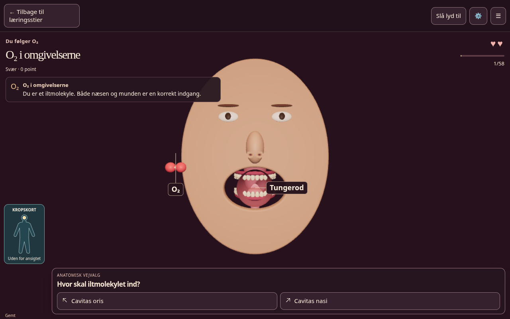
O₂ vises uden for det genbrugte ansigt. Næse og mund er begge rigtige indgange.Luftvejene og mucociliær transport
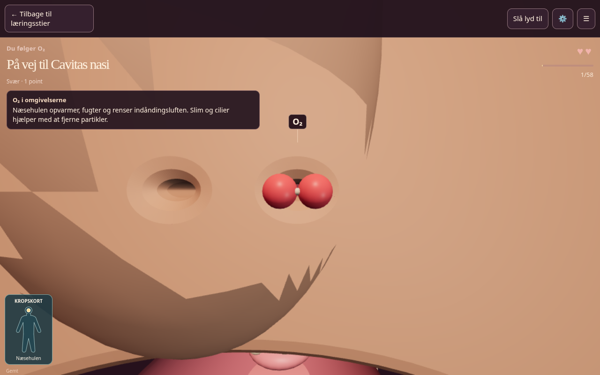
ansigt naese
O₂ starter uden for det genbrugte ansigt. Begge indgange er korrekte; her vælges næsen med septum og conchae.
Åbn billedet · MP4 · WebM
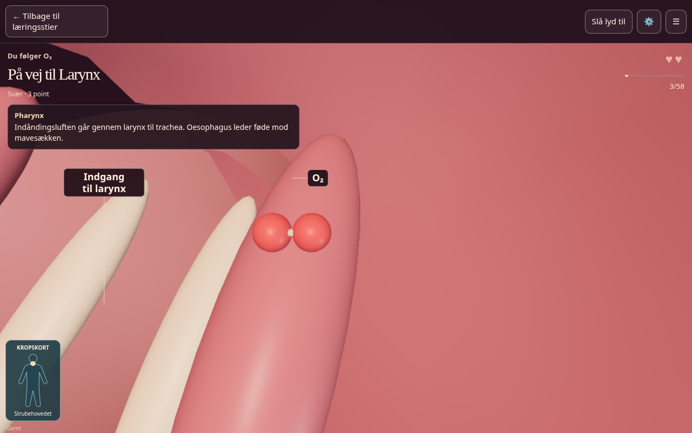
larynx
Epiglottis er et blad ved indgangen, og luften fortsætter rundt om det gennem den åbne glottis. Oesophagus vælges ikke.
Åbn billedet · MP4 · WebM
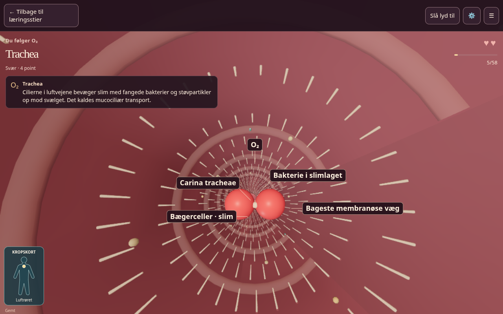
cilier slim
Cilierne slår i bølger under et særskilt væske- og slimlag. Bruskringene er C-formede og åbne bagtil.
Åbn billedet · MP4 · WebM
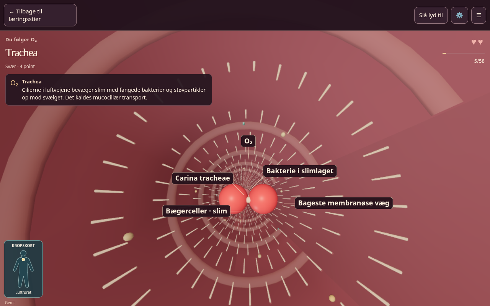
bakterie modsat
Spilleren bevæger sig nedad, mens den markerede bakterie bliver i slimlaget og passerer op mod svælget. Kameraet drejes tilbage efter passagen.
Åbn billedet · MP4 · WebM
Alveole, diffusion og hæmoglobin
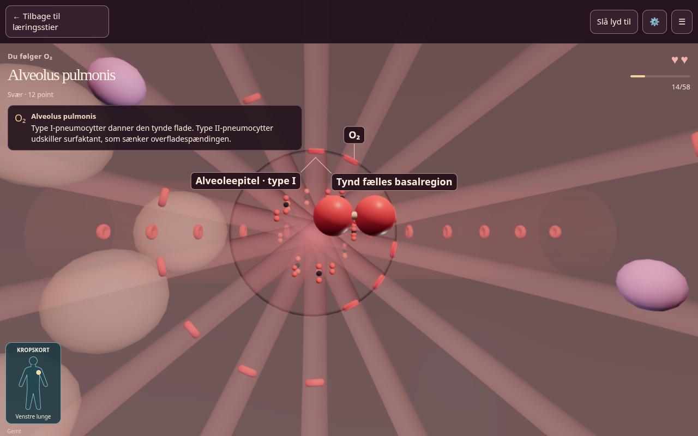
alveole
Den tynde alveole vises som undervisningssnit med type I/II-celler, surfaktant, kapillærnet og erytrocytter. Ingen almindelige cilier.
Åbn billedet · MP4 · WebM
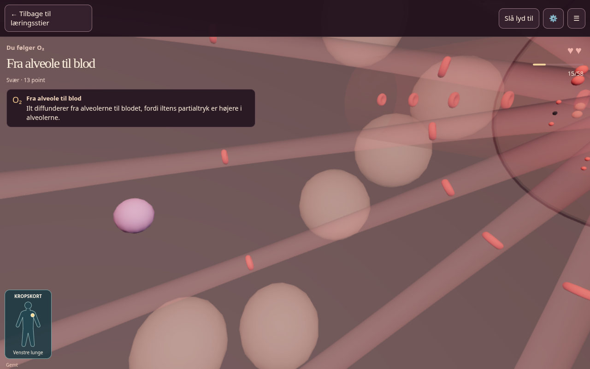
ilt diffusion
Det samme O₂ passerer alveoleepitel, basalregion, endotel, plasma og erytrocyt. Små CO₂-molekyler diffunderer modsat.
Åbn billedet · MP4 · WebM
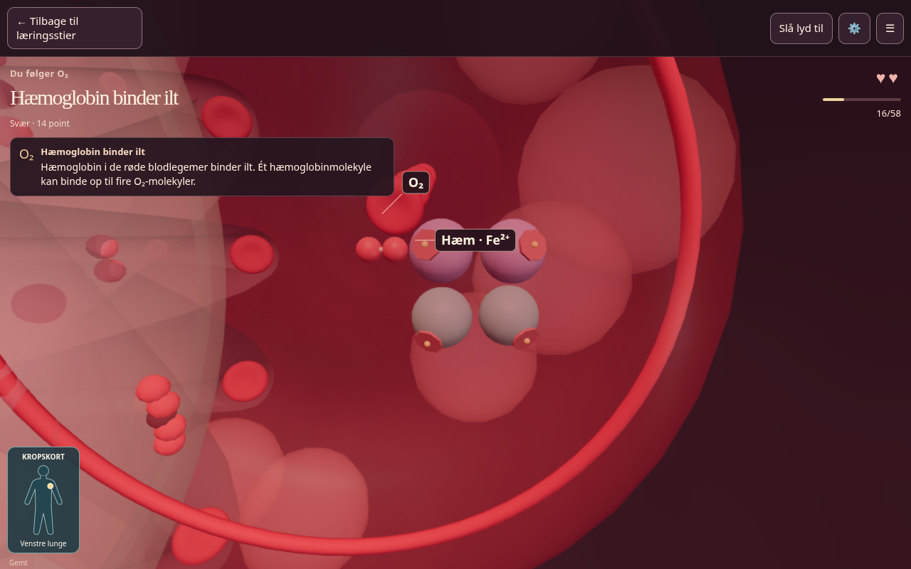
haemoglobin
Hæmoglobin har fire underenheder, fire hæmgrupper og fire Fe²⁺-centre. Det primære O₂ bevares som samme model og binder reversibelt.
Åbn billedet · MP4 · WebM
Kredsløb, væv og nyt CO₂
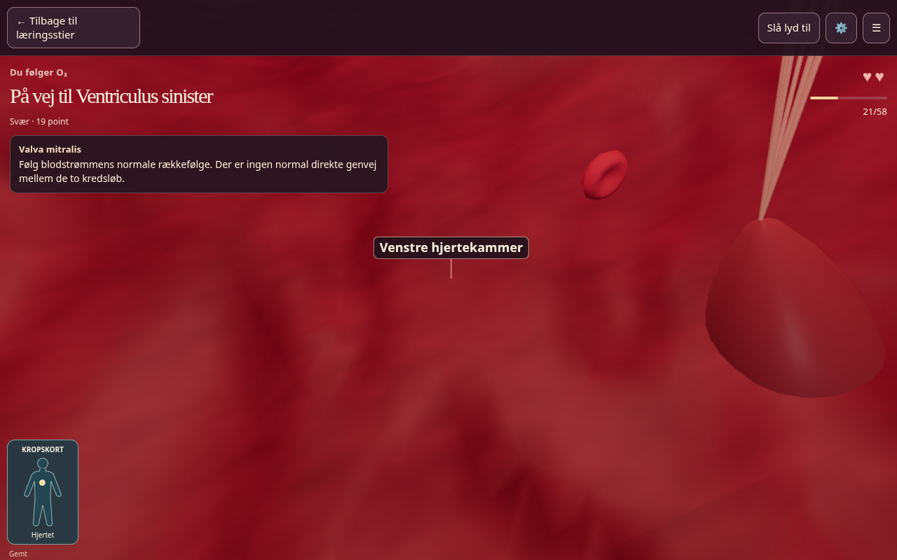
hjerte
Genbrugte kamre, klapsejl, chordae og papillærmuskler. Passagen afventer en åben klap ved den fælles hjerterytme.
Åbn billedet · MP4 · WebM
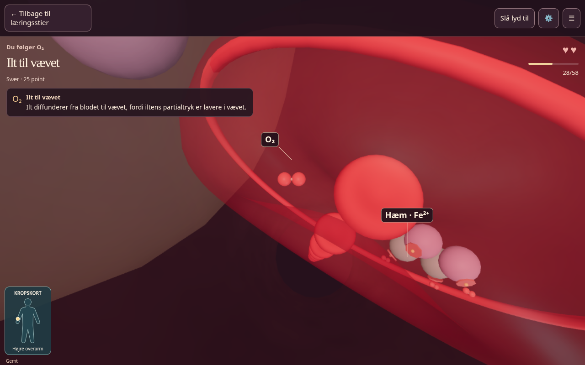
vaev ilt atp
O₂ frigives fra intakt hæmoglobin, forlader kapillæren og når vævets mitokondrie. Den genbrugte glukosemodel og ATP illustrerer energiomsætningen.
Åbn billedet · MP4 · WebM
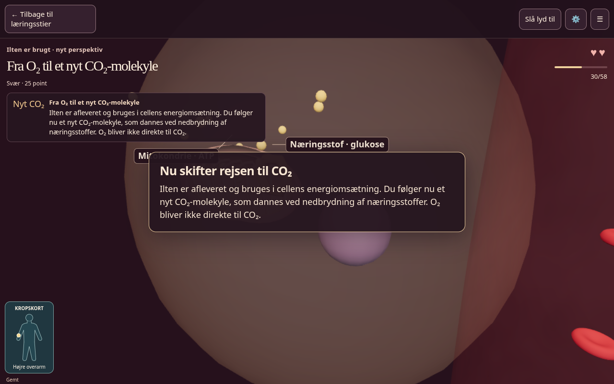
nyt co2
Et tydeligt perspektivskift til et NYT metabolisk CO₂. Carbon kommer fra næringsstoffer; O₂ omdannes ikke direkte til CO₂.
Åbn billedet · MP4 · WebM
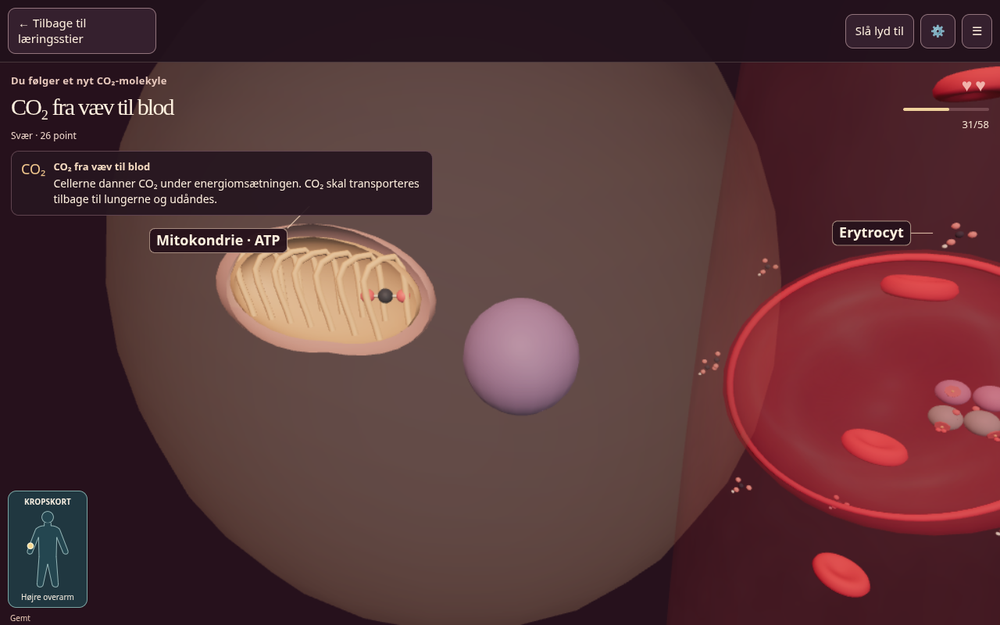
co2 transport
CO₂ diffunderer til blodet og omdannes især i erytrocytten. Hovedparten følges som HCO₃⁻ i plasma; mindre mængder vises opløst eller bundet til globin, aldrig hæmjern.
Åbn billedet · MP4 · WebM
Tilbage til lungerne og udånding
Tilbageblik på slimtransporten
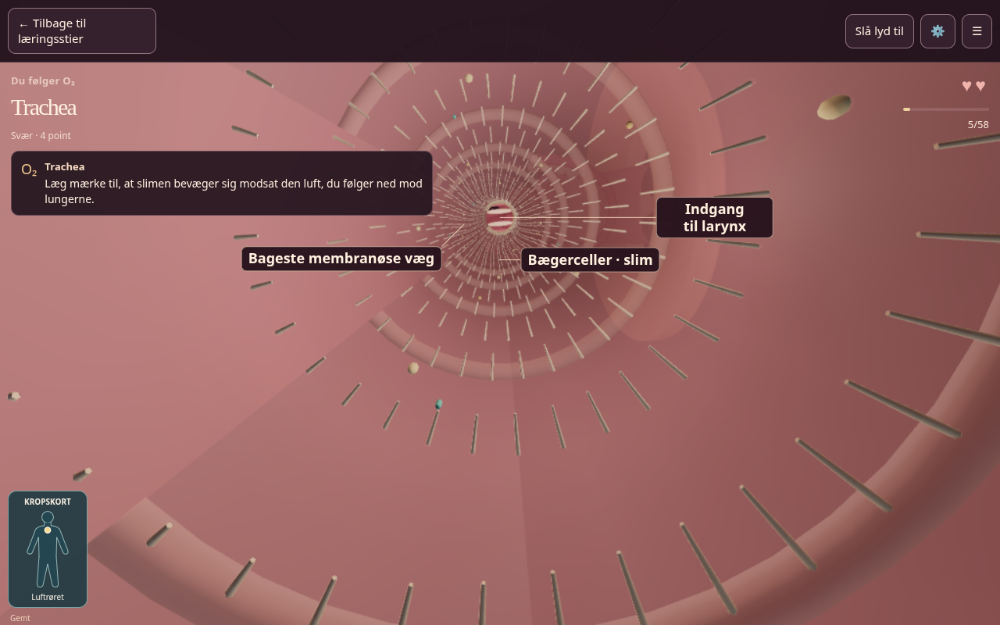
Kameraet er drejet tilbage mod larynx. Samme slimtransport fortsætter proximalt. Selve passagen ses i klip 04.Mobil
Emuleret mobil i Chromium. En fysisk iPhone/Safari er ikke testet i dette miljø.
Landskab
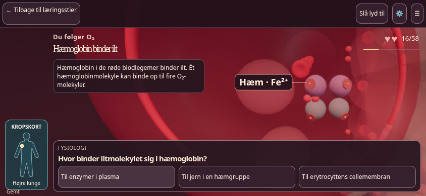
844 × 390: infoboksen til venstre og 3D-fokus til højre. Anatomien er ikke flyttet.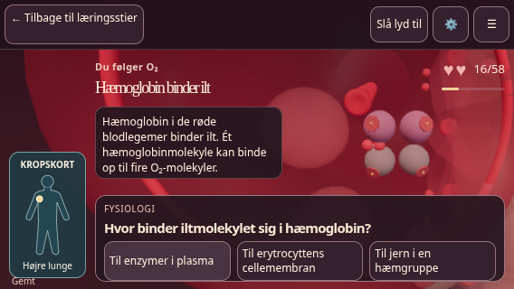
568 × 320: infoboksen til venstre og 3D-fokus til højre. Anatomien er ikke flyttet.Bevar denne HTML-fil sammen med mapperne visuelt/ og performance/, når materialet flyttes.